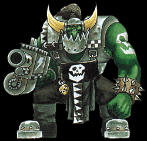
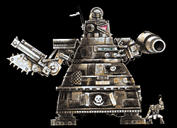
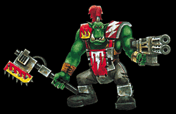
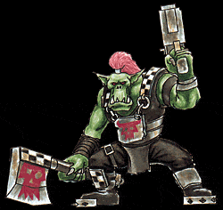
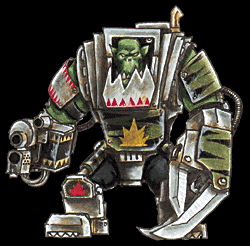
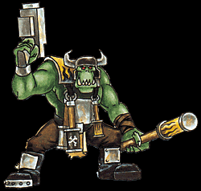

Imperial Forces |
Force Disposition Introduction |
Ork Forces |
|

Great Overlord Ghazghkull's War Horde
Tribal Colours: black and white
Tribal Glyph: black, white or red one-eyed skull.

Tribal Motifs: black and white checks or dags
Notes: By far the biggest single tribe fighting on Armageddon, Ghazghkull's horde numbers over three hundred warbands and eighteen heavyweight Ork Gargants. It is built around a core of veteran Ork warbands who have followed Ghazghkull since the last Armageddon war and fought across Golgotha, Piscina and a hundred other worlds. The tribe's glyph is a representation of Ghazghkull himself, which they display with an almost religious fervour on banners, shoulder plates and vehicles. The War Horde is reported to be fighting in Armageddon Secundus, primarily engaged in the siege of Infernus and fighting in the Palidus mountain region.
White Lightning Tribe Tribal Colours: steel or red Tribal Glyph: triple white lightning bolt.  Tribal Motifs: red and yellow flames Notes: The White Lightning tribe represents the largest coalition of Speed Freek warbands on the surface of Armageddon. White Lightning bikes, buggies and trukks are scattered all over the icy salt-flats of The Deadlands in the far south, forming part of a roving mechanised horde which has been systematically devastating the water processing plants and pipelines which are vital to the continued survival of the hives on the mainland.
Black Slayers Tribe Tribal Colours: black Tribal Glyph: red horned skull  Tribal Motifs: black and white checks Notes: The Black Slayers are a notorious scourge of the so-called Great Despot of Dregruk, an Ork empire to the galactic north of Armageddon. The Black Slayers have a reputation for taking no prisoners and slaughtering even non-combatants in an orgy of bloodlust, unusual for Orks as they rely heavily on slave-labour. It seems that a large proportion of the Black Slayers are fighting in Armageddon Prime, street-fighting through the shattered docklands of Tempestora and Death Mire.
|
|

Crooked Moon Tribe
Tribal Colours: yellow
Tribal Glyph: black quarter-moon

Tribal Motifs: black flames
Notes: The Crooked Moon tribe is part of Ghazghkull's forces in Armageddon Secundus, currently embroiled in battles around the Helsreach peninsula. The fighting has been intense and the tribe has lost a third of its warriors gaining control of three volcanic peaks known locally as the Three-Pig. Despite its losses, the tribe can still muster twenty warbands and thanks to the unfortunate demise of their fellows, the survivors are extremely well-equipped with stikkbombz, armour and weaponry. The Crooked Moon Tribe has obvious affiliations with the Bad Moon clan and has been fighting in coordination with the warbands of Warlord Morbad, whose preponderance of heavy ordnance and profligate use of ammunition has earned him the weary nickname 'More-bang' among Imperial troops.
Stompers Tribe
Tribal Colours: green and black
Tribal Glyph: red or yellow explosion
Tribal Motifs: yellow or red dags
Notes: The Stompers tribe are part of the invasion force of Urgok the Unstoppable fighting through the parched highlands of the Fire Wastes, north of the Boiling Sea. The tribe is unusual because it uses dreadnoughts and walkers almost exclusively instead of more conventional buggies, bikes or other vehicles. There have even been reports of the Stompers using captured sentinels and rebuilt Space Marine Dreadnoughts in their ranks. The tribal colours of the Stompers are applied in a primitive camouflage pattern which appears to be an attempt to mimic the coat of the Koriger, an aggressive predator of the equatorial jungles which divide Armageddon Prime and Secundus.
|